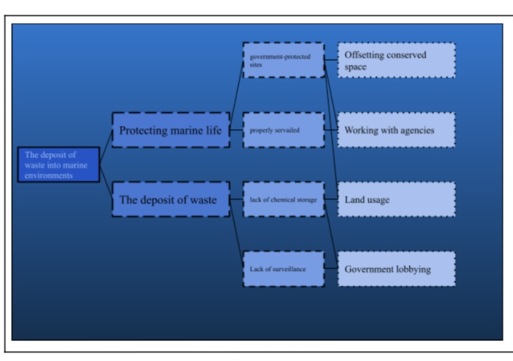
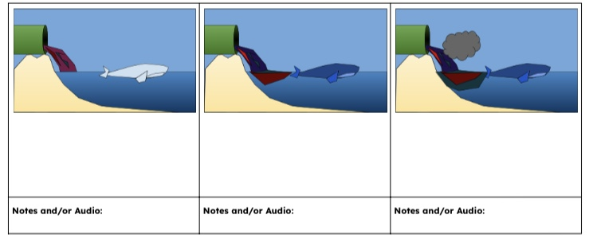
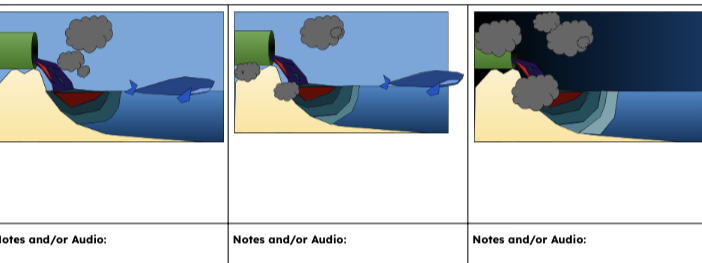
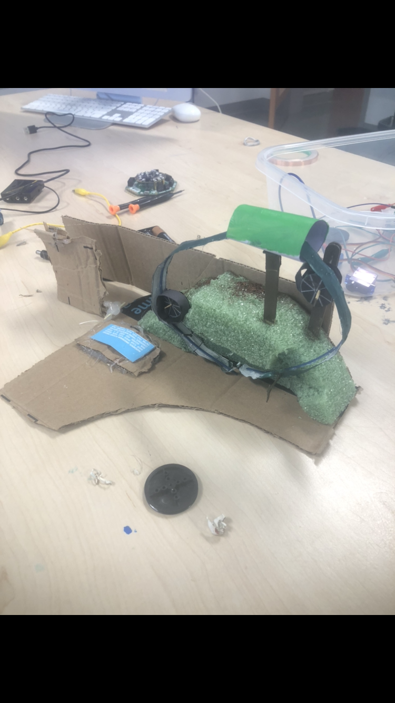
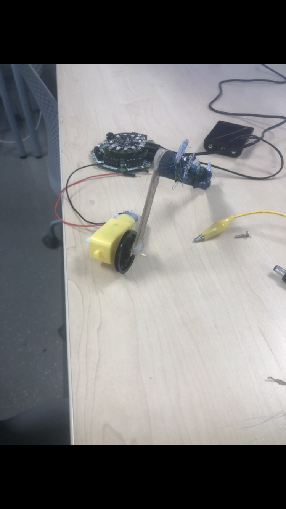

In this project we attempted to explore the importance of ocean pollution and how it effects the world, we found that it is horiably damaging not just to sea life but to the socio economic system in which we reside. water pollution is the processes in which plastic and other pollutants are put into a water souce, be it a river, ocean lake or other wises, this practice damages and kills aquatic flora and fauna. to illustrate such atrocities, in our project we try to show how bad polluting waterways can be.
although this storyboard is not entirely accurate it does capture the essence of the prince and the message it was meant to send as it accent note the importance of climate and oceanic pollution in its pressure for vengeance and detrimental effects, as the population begins to spread across the waves draws the animals away and results in a darker world where animals have left the vicinity and trouble is afoot. pouliotion beingins t to spread across tjhe waves ot draws the animals away and reults in a darker world where animals have left the vicinity and trouble is a foot.
 the main character in this peice are not people or animals, but concepts. Protagonist Ocean Survival and to have the animals leave strengths- Variable, sympathetic, mighty yet fallen Weaknesses- Breakable, weakened, fearful Does not put up a fight Antagonist Plastic pollution To Over take the ocean with pollution Strengths- Oppressive, all-consuming, powerful Weaknesses- Devious, obvious Moves forward through means of crackable or rotation moter
 Although I was not in any way connected with the software component, I was strongly involved with the hardware and how it was integrated into the project. In this project, I designed and built two separate systems, one a belt and pulley system that ended up not functioning, and the second a rotating to horizontal movement transistor. I built this aforementioned horizontally moving mechanism by using a movable axle attached to a set of rectangular sticks which balanced on a piece of reinforced cardboard and rotated a fixed gear to have the beam go back and forth with the help of the rotational axle.
.PNG)